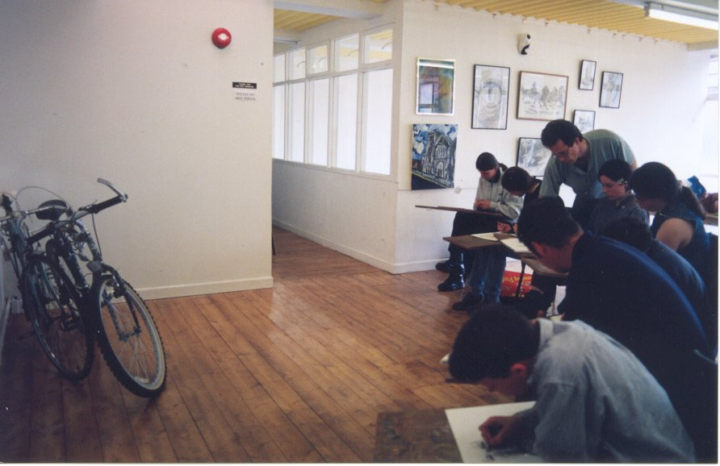

Art Centre History
In the mid 1980’s the South Tipperary Art group (STAG) began to look at the possibility of setting up an Art Centre in Clonmel. Later the Clonmel Gallery group also expressed an interest in the setting up of an Art Centre. In the spring of 1994 a publicly elected steering committee was formed after initial discussions over many months.
In May of 1995 South Tipperary Art Centre was formed as a non-profit making company. It then held its first AGM to elect a Board of Directors chaired by Kathleen Maher then President of Clonmel Chamber of Commerce.

Saturday morning art class